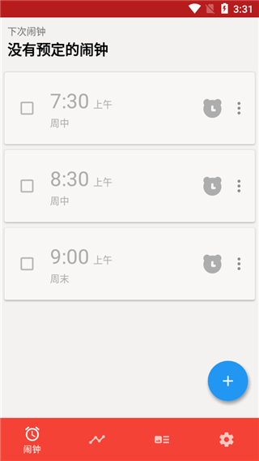

从数学题到深蹲挑战：Alarmy 六年如何把闹钟做成行为约束系统
一款闹钟 App 为什么要让你扫码、蹲起、解数学题？从迭代逻辑看 Alarmy 如何死磕"让你真的起床"这件事，以及它的下一步会往哪走。
现在这版 Alarmy 已经有点不像闹钟了——去它的官网逛一圈你就会发现，这家公司从来不做普通的闹钟。
打开它的任务列表，你会看到扫码起床、深蹲挑战、数学题、拍照确认、走路计数、摇晃手机……加起来不下八种起床任务，每种都不是"按一下关闭按钮"就能糊弄过去的。再往下翻设置，防关机、防卸载、睡眠追踪、打鼾检测，连 Android 的无障碍服务和设备管理员权限都用上了——这已经不是一个"叫你起床"的工具，它是一套起床行为约束系统。

我第一次注意到 Alarmy 是在大概两年前，那时候它还只有拍照和数学题两种核心任务。没想到这两年下来，它的迭代方向越来越清晰——每一次更新都在回答同一个问题：怎么让用户没法作弊、必须真的从床上爬起来。
起步：从一道数学题说起
样本文档里没有提 Alarmy 的早期版本历史，甚至连它的发布年份都没写。但从功能分层反推，它的起点应该很朴素——就是"普通闹钟关不掉"。
最早的核心任务是数学题和拍照。数学题的逻辑简单粗暴：闹钟响了弹一道随机四则运算，算对了才能关。拍照稍复杂一点——你预先拍一张照片（比如冰箱里的牛奶、书架上的某本书），闹钟响了必须在原地拍一张匹配度足够高的新照片。这两种任务在当时的闹钟 App 里都算新鲜，但本质上还是"增加一个认知步骤"——醒是醒了，但身体还可以不动。
然后拍照任务慢慢暴露了一个问题：作弊门槛太低。你可以提前把照片存在另一台手机里，闹钟响了翻出来对着拍就行。或者光线好的时候拍一张，阴天早上对着同一张照片也能骗过视觉匹配。官方没有直接说这件事，但后续的迭代方向已经给出了答案——从认知验证转向物理约束。
转折点：位置类任务把你钉下床
扫码任务的出现是第一个明显的转折点。它和拍照的区别在于：零随机、零容错。你注册一个商品条形码或二维码贴在冰箱上，早上必须走到冰箱前扫一下那个精确的码才能停闹钟。角度不对、光线不好、手机拿得太近——都不行。样本文档里有个细节：扫码任务还提供了"学习模式"，会记住你扫描时的手机角度和距离参考，下次换个角度扫可能就匹配失败。
这意味着什么？作弊成本从"提前存一张照片"飙升到"提前走到那个位置、拿到那个物体"。你总不能把冰箱搬到床上吧。
紧随扫码之后的是 NFC 标签任务——原理类似，但用 NFC 芯片代替条码。你可以把 NFC 贴纸贴在牙刷杯、门把手、鞋子里，早上必须用手机碰一下才能关闹钟。这两种任务有一个共同的设计哲学：闹钟不关心你是否"醒了"，它只关心你是否"到了某个地方"。而那个地方，一定是你床边以外的。
这个哲学在后来的走路任务和位置验证任务里被延续和强化——闹钟响了必须走够指定步数，或者到达某个 GPS 坐标半径内。到这一步，Alarmy 已经完成了从"增加认知负担"到"强制身体位移"的定位转变。
再进阶：身体类任务让你真的醒
但物理位移还不够。有用户反馈：走到冰箱扫完码，转身回床继续睡。身体到了，意识还没回来。
于是身体类任务登场了。摇晃手机是最简单的——必须摇晃够指定次数，加速度传感器才会计数。走路是进阶——不只是位移，还要持续移动一段时间。而深蹲是身体类任务里强度最高的一个：站起来、蹲下去、再站起来，每一次都要经过姿态识别的验证。样本文档里说，"蹲到第三次的时候脑子才真正开始转"——这恰恰是设计的目标：让身体先于大脑醒来。
为什么深蹲比走路更有效？因为走路是可以"边走边睡"的——你可以迷迷糊糊地踱步，眼睛还没完全睁开。但深蹲不行，每一次下蹲和起立都需要核心肌肉和下肢肌肉的完整发力，心率和体温会在短时间内显著上升。睡眠惯性几乎不可能维持。
我注意到一个细节：身体类任务的传感器精度在迭代中不断上调。早期版本可能只要检测到加速度就算一次摇晃，现在必须经过完整的姿态确认——从站立开始、下蹲到足够深度、回到站立位置、短暂停留。这种"反作弊收紧"的节奏，从拍照到扫码到深蹲，贯穿了整个产品的进化史。
权限系统：从"最小化"到"重型防护"的分层
权限需求的演化也是一条有趣的线索。从Alarmy下载拿到安装包装完之后，第一次启动时的权限申请流程是它的第一张名片。
早期 Alarmy 只需要通知权限——这是任何闹钟的基础。然后拍照和扫码任务来了，要相机权限；睡眠追踪和打鼾检测上线，要麦克风；走路任务要 GPS 校准，要位置权限；导入自定义铃声，要存储。这些都是温和的、"任务相关才申请"的权限。
但 Premium 订阅带来了真正重型的东西：Android 专属的无障碍服务和设备管理员权限。无障碍服务用来在闹钟响铃期间拦截系统关机操作——你不能按电源键关机来逃避；设备管理员权限用来防止卸载——你不能把 App 删了来逃避。样本文档里专门解释了这两个权限的风险，说 Alarmy 只在闹钟响铃期间激活、平时不工作。
这两个权限的引入意味着 Alarmy 的 Premium 功能已经从"解锁更多任务"升级到了"为极重度睡眠者提供终极防护"。去Alarmy文档翻一下权限说明页就会发现，它对每个权限的用途和风险都写得很坦诚。它不再只是一个工具，而是某种行为矫正装置——代价是更高的权限信任，以及 iOS 用户永远享受不到这两项功能。
这六年它一直在死磕什么
从这些功能迭代里，我看到一个非常一致的优先级：死磕"作弊难度"，把闹钟从"关闭"变成"完成"。
每一种新任务的加入，本质上都是在回答"上一种任务的作弊漏洞在哪里"：拍照太容易被备用照片骗 → 换成扫码（精确匹配）；扫码只需要走到一个点 → 换成走路（持续移动）；走路可以迷迷糊糊混过去 → 换成深蹲（强制肌肉发力）；深蹲能做完就回床 → 加数学题组合（身体 + 大脑双重唤醒）。
什么是它一直没做的？样本文档里没有提到闹钟皮肤、主题定制、社交分享、排行榜、闹钟社区。甚至连闹钟声音的自定义都只提了一句"导入自定义铃声需要存储权限"——没有主题商店、没有艺术家合作铃声包、没有好友叫醒功能。它就是一个纯工具取向的产品，所有的注意力都在"怎么把你叫醒"这件事上，没有多余的。
照这个路线，下一步会在哪
说预判肯定是瞎猜，但从迭代规律推一推还算靠谱。
第一个方向可能是睡眠数据与任务选择的联动。样本文档里已经有睡眠追踪和打鼾检测了——如果 Alarmy 能根据前一晚的睡眠质量自动选择今天早上的任务（深睡不足 6 小时 = 深蹲 20 次，睡眠充足 = 数学题 5 道），那会比现在手动选任务精准得多。
第二个方向是更多传感器融合。现在的任务只用了加速度计、相机、GPS、NFC——如果结合心率传感器来判断"你是不是真的醒了"（心率降到静息以下才算完成），或者结合麦克风的声音特征来验证"你是不是真的在说话"，那作弊的门槛还能再上一个台阶。
第三个方向是iOS 端的防护能力补齐。Android 用户有无障碍服务和设备管理员权限保驾护航，iOS 用户目前只有"关机惩罚"这种自愿性虚拟罚款。如果 Alarmy 能找到 iOS 生态内可行的防护手段（虽然可能性不大），那对 Premium 用户的吸引力会显著增加。
但也可能它什么都不做。有时候一个产品的迭代到了某个阶段，继续加功能反而会稀释核心价值——也许 Alarmy 的团队已经意识到，最好的闹钟不是任务最多的那个，而是你真正需要的那个。
我自己现在还在用它——数学题 + 深蹲的组合，数学题让脑子转起来，深蹲让身体热起来，完成的时候基本已经清醒了。偶尔作弊成功的时候（比如前一天实在太累，深蹲蹲到第 8 次偷偷把手机摇了一下让传感器提前计数），会有点愧疚感——这种"被工具看穿"的微妙体验，反而是它最有意思的地方。

这套 Alarmy 的文档资料我同步维护了三份镜像，GitHub 是主仓，国内网络访问可以走 Gitee 或 GitCode，内容完全一致。